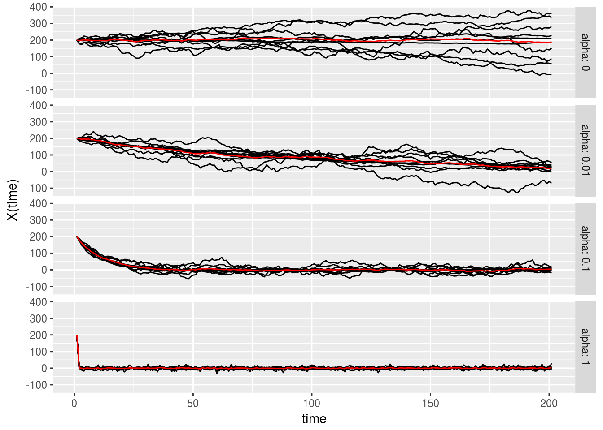

Introduction to Ornstein-Uhlenbeck Process
Yanyu Liang
2018-03-08
Last updated: 2018-03-09
Code version: f6de2c0
\[ \newcommand\var{\text{Var}} \newcommand\cov{\text{Cov}} \newcommand\E{\text{E}} \]
Pre-requisites
Please read Brownian motion beforehand.
Motivation
Consider the drunk person sernario again but now instead of walking along a flat land, the guy is walking on a convex one (see figure below).

Although he/she still tends to walk in random direction but the curvature of the line traps him/her because of gravity (keeping the person not far from the minimum point, \(\mu\)). Suppose the trapping force gets bigger proportionally to the distance to \(\mu\). Namely, for an time interval \(t_i \rightarrow t_i + \Delta t = t_{i + 1}\), \(\Delta_{\text{force}} x = \alpha (\mu - x(t_i)) = \alpha (\mu - x_i)\), where \(\alpha\) controls how strong the force can be. Then, we can simulate the process as follow.
trappedRandomWalk <- function(nsteps, initial.pos, alpha, mu, sigma = 1) {
pos <- rep(NA, nsteps + 1) # generate a vector to record the positions as time goes
pos[1] <- initial.pos # set initial position
for(i in 2 : (nsteps + 1)) { # loop over time points
delta.force <- alpha * (mu - pos[i - 1]) # compute how force affects the update
delta.random <- rnorm(1, mean = 0, sd = sigma) # compute how random walk affects the update
delta.x <- delta.force + delta.random
pos[i] <- pos[i - 1] + delta.x
}
return(pos)
}Perform the simulation under \(\alpha = 0.1, 0.01, 0\) with \(\mu = 0, \sigma = 1, x(0) = 200\). Note that when \(\alpha = 0\), the process is equivalent to random walk since force has no contribution. Red line is the average of \(x_i\).

As you can see, when the force is big, the person goes to \(\mu\) fairly quickly and if \(\alpha\) is close to zero, the process behaves more like random walk. Note that even when the drunk person has already close to \(\mu\), the variance of the walk afterward is still smaller than pure random walk. This is because the random effect is not completely cummulated as in random walk case. In other word, any random effect is damped by force and the bigger the force the smaller the variance would be.
Mathematical formalism of Ornstein-Uhlenbeck process
Ornstein-Uhlenbeck (OU) process can be seen as a continuous-time version of the random walk with trapping force as above. Mathematically, \(\forall 0 < s < t\), OU process follows \[\begin{align} X(t) | X(s) = x_s \sim N(\mu + (x_s - \mu)e^{-\alpha (t - s)}, \frac{\sigma^2}{2 \alpha}(1 - e^{-2\alpha (t - s)})) \label{eq:ou} \end{align}\], where \(\mu\) is the position to which the force traps, \(\alpha\) controls the strength of the force, and \(\sigma^2\) is the strength of random noise.
By rearranging , we have \[\begin{align*} X(t) - X(s) &= (1 - e^{-\alpha (t - s)})(\mu - X(s)) + \sqrt{\frac{\sigma^2}{2 \alpha}(1 - e^{-2\alpha(t-s)})}Z \\ Z &\sim N(0, 1) \end{align*}\] Therefore, the increment of OU process is not stationary or independent. But since \(X(t_{i + 1})\) is linear combination of \(X(t_i)\) and \(Z\) with some fixed coefficients, i.e. \[\begin{align*} X(t_{i + 1}) &= e^{-\alpha (t_{i + 1} - t_i)} X(t_i) + \sqrt{\frac{\sigma^2}{2 \alpha}(1 - e^{-2\alpha(t_{i + 1} - t_i)})}Z + const. \\ X(t_1) | X(0) = x_0 &\sim N(\mu + (x_0 - \mu)e^{-\alpha t_1}, \frac{\sigma^2}{2 \alpha}(1 - e^{-2\alpha t_1})) \end{align*}\] we can conclude that \(\forall 0 < t_1 < \cdots < t_n: X(t_1), \cdots, X(t_n) | X(0) = x_0 \sim MVN\) with \(\E(X(t_i) | X(0) = x_0) = \mu + (x_0 - \mu)e^{-\alpha t_i}\) and \(\cov(X(t_i), X(t_j)) = \frac{\sigma^2}{2 \alpha}(e^{-\alpha(t_j - t_i)} - e^{-\alpha(t_i + t_j)}), \forall j > i\). The result becomes clear if we write down the corresponding \(A\) as what we did for Brownian motion. \[\begin{align*} A = \begin{bmatrix} f(t_1) & 0 & 0 & 0 & \cdots \\ g(t_2 - t_1) f(t_1) & f(t_2 - t_1) & 0 & 0 & \cdots \\ g(t_3 - t_2) g(t_2 - t_1) f(t_1) & g(t_3 - t_2) f(t_2 - t_1) & f(t_3) - f(t_2) & 0 & \cdots \\ \cdots \end{bmatrix} \end{align*}\], where \(f(t) = \sqrt{\frac{\sigma^2}{2 \alpha}(1 - e^{-2\alpha t})}\) and \(g(t) = e^{-\alpha t}\). To obtain covariance, it’s just a matter of rearranging \(f\)’s and \(g\)’s.
Addendum: defining OU process with SDE
An alternative way (also more common way, see wikipedia) to define OU process is using stochastic differential equation \[\begin{align*} dX(t) = \underbrace{\alpha(\mu - X(t)) dt}_{\text{trapping force}} + \underbrace{\sigma dW_t}_{\text{random walk}} \end{align*}\] , where \(W_t\) is a standard Brownian motion. Note that this equation is very similar to what we have used to simulate random walk with trapping force. With \(X(0) = x_0\), the integration of the SDE takes the form \[\begin{align*} X(t) &= \mu + (x_0 - \mu) e^{-\alpha t} + \sigma \int_0^t e^{-\alpha (t - s)} dW_s \end{align*}\]From the second term on the right hand side, it is clear that noise term is also damped with exponential decay.
Session information
sessionInfo()R version 3.2.3 (2015-12-10)
Platform: x86_64-pc-linux-gnu (64-bit)
Running under: Ubuntu 16.04.3 LTS
locale:
[1] LC_CTYPE=en_US.UTF-8 LC_NUMERIC=C
[3] LC_TIME=en_US.UTF-8 LC_COLLATE=en_US.UTF-8
[5] LC_MONETARY=en_US.UTF-8 LC_MESSAGES=en_US.UTF-8
[7] LC_PAPER=en_US.UTF-8 LC_NAME=C
[9] LC_ADDRESS=C LC_TELEPHONE=C
[11] LC_MEASUREMENT=en_US.UTF-8 LC_IDENTIFICATION=C
attached base packages:
[1] stats graphics grDevices utils datasets methods base
other attached packages:
[1] stringr_1.3.0 reshape2_1.4.2 ggplot2_2.2.1
loaded via a namespace (and not attached):
[1] Rcpp_0.12.13 digest_0.6.12 rprojroot_1.3-2 plyr_1.8.4
[5] grid_3.2.3 gtable_0.2.0 backports_1.1.2 git2r_0.21.0
[9] magrittr_1.5 evaluate_0.10.1 scales_0.5.0 pillar_1.1.0
[13] rlang_0.2.0 stringi_1.1.6 lazyeval_0.2.0 rmarkdown_1.9
[17] labeling_0.3 tools_3.2.3 munsell_0.4.3 yaml_2.1.17
[21] colorspace_1.3-2 htmltools_0.3.6 knitr_1.20 tibble_1.4.2 This site was created with R Markdown